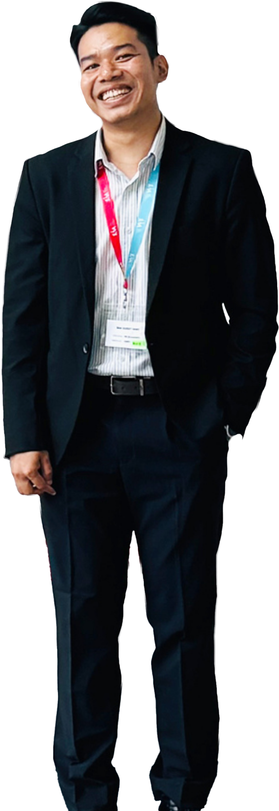
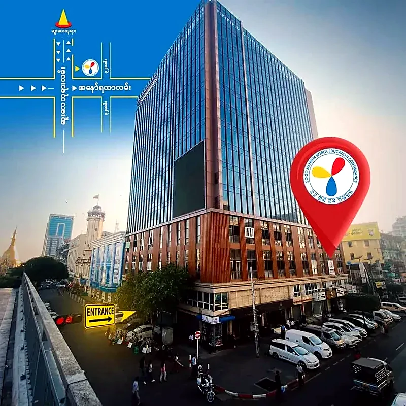
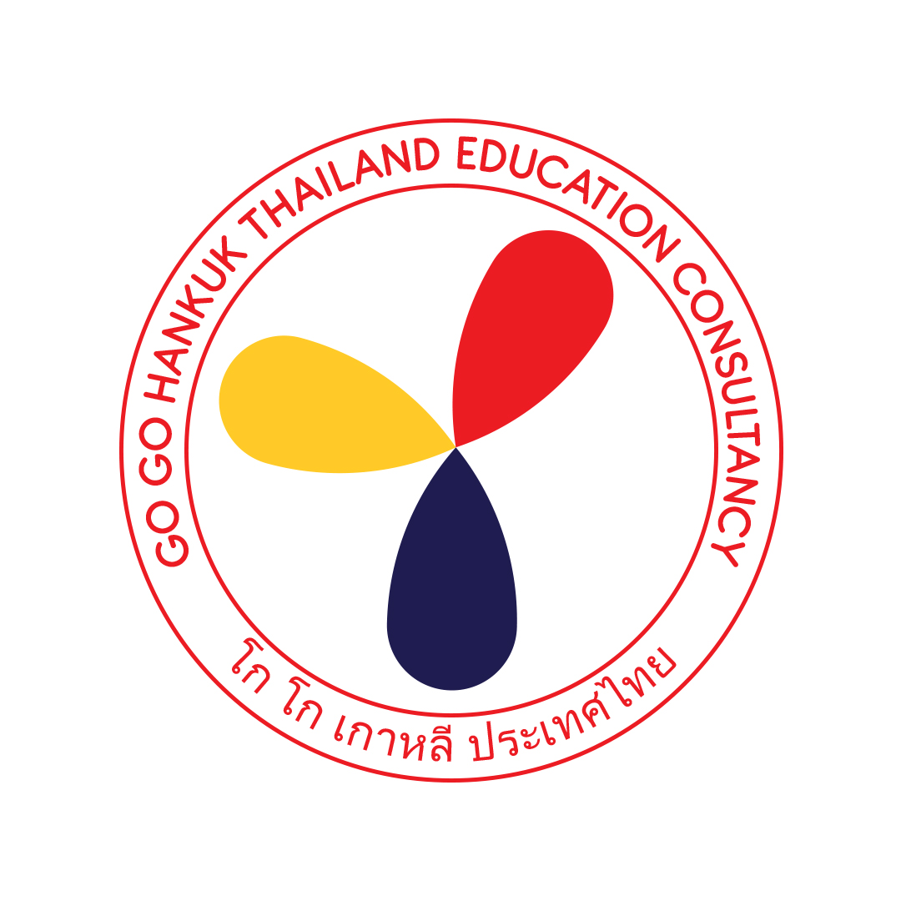
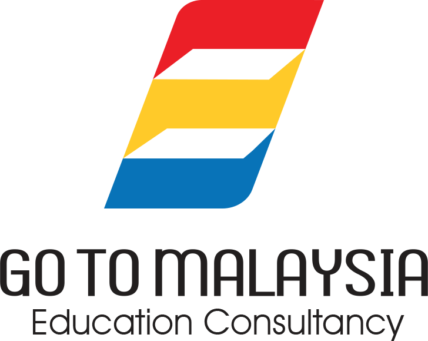

VISION
Our Vision
To be a leading international education bridge that empowers Myanmar students to access global academic and career opportunities.

WHO WE ARE
Go Go Hankuk Consultancy Company was established in 2022 with the vision of empowering Myanmar students to achieve their academic and career dreams.
Over the past 3 years, we have successfully guided approximately over 700 students, providing them with tailored solutions to navigate educational challenges both in Myanmar and abroad. With over three years of experience, we are committed to continuously improving our services to help youths achieve brighter futures.
Our consultancy addresses the challenges students face in Myanmar while ensuring a smooth transition to peaceful and productive learning experiences abroad. By prioritizing safety and academic success, we ease parents' concerns and provide unparalleled support. Go Go Hankuk Consultancy Company stands as a trusted leader in educational consultancy, paving the way for future generations.
VISION
To be a leading international education bridge that empowers Myanmar students to access global academic and career opportunities.
MISSION
CORE VALUES
The principles that guide every conversation, application and partnership.
Upholding honesty and transparency in every process
Building long-term relationships with students and partners
Prioritizing student outcomes and development
Maintaining high standards in service delivery
Strengthening international partnerships and networks
LEADERSHIP
Experienced advisors dedicated to guiding every student from first enquiry to arrival.

FOUNDER'S PROFILE
Founder & Managing Director
Zun Phu Wai is the Founder and Chief Executive Officer of Go Go Hankuk, leading the company’s strategic direction and overall operations.
With a background in education consultancy and international program coordination, she has developed strong expertise in student advisory services, visa processing, and partnership development with educational institutions.
Since establishing Go Go Hankuk in 2022, she has played a key role in building the company into a reliable consultancy focused on South Korea and international pathway programs.
Her leadership is centered on delivering professional, transparent, and student-focused services, ensuring that every student receives clear guidance and support throughout their study-abroad journey.
Her vision is to position Go Go Hankuk as a leading Korea and international pathway education consultancy in Southeast Asia.

DIRECTOR'S PROFILE
Director
Nay Myo Thura Naing serves as the Director of Go Go Hankuk, leading the company’s branding, marketing strategy, and business development initiatives.
He holds an MBA (International Program) from Siam University, Thailand, with a focus on marketing, business strategy, and the education industry.
With nearly 10 years of experience in marketing and graphic design, he brings strong expertise in brand development, visual communication, and digital marketing. His work plays a key role in strengthening Go Go Hankuk’s professional image and positioning in the education consultancy market.
At Go Go Hankuk, he is responsible for developing communication strategies, supporting business expansion, and enhancing customer experience to ensure consistent growth and brand recognition.
His vision is to build Go Go Hankuk into a premium and internationally recognized education consultancy brand.
OUR OFFICE & CLASSROOM
Take a look around our counselling rooms, classrooms and study spaces in Yangon.
OUR JOURNEY
A closer look at our team, activities and student journeys.

SAMPLE PREVIEW
Your YouTube video will appear here.
This is a sample preview. A Go Go Hankuk YouTube video has not been connected yet.
Explore study opportunities with our education agencies in Thailand and Malaysia.

Go Go Thailand supports students applying to universities in Thailand, helping them take the next step in their education journey.

For students who cannot go directly to Korea, Go To Malaysia supports a pathway of two years at universities in Malaysia, followed by transfer to a university in Korea.
OUR NETWORK
Go Go Hankuk is continuously expanding its international network to create broader opportunities for students.
The network includes universities, colleges, language institutions, and education partners working collaboratively to provide diverse and flexible study options.
YOUR GOALS. OUR SHARED JOURNEY.
There’s a lot to think about when you plan your education. We help you turn the questions into a clear next step.
Get to know your options ↗THE NEXT CHAPTER
Every student’s path is different. Here’s how thoughtful preparation can make a difference.
It starts with
a possibility.
ILLUSTRATIVE STUDENT JOURNEY
Sample story for this preview, not a verified testimonial.